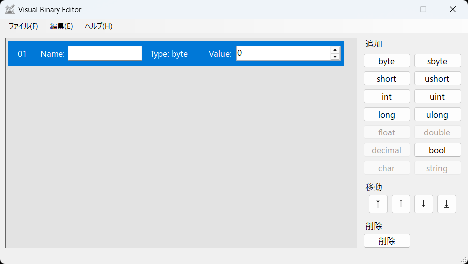
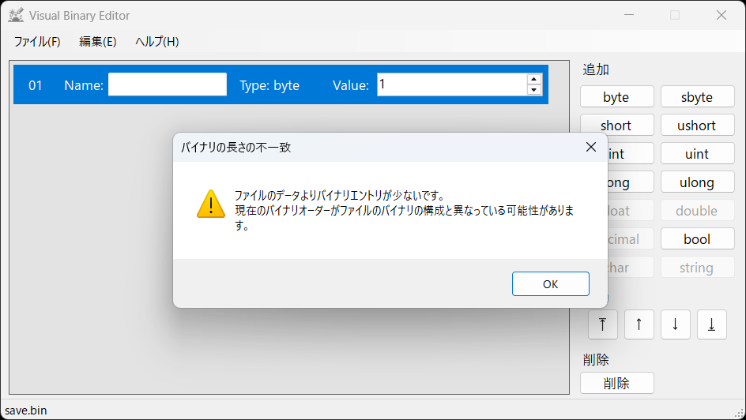
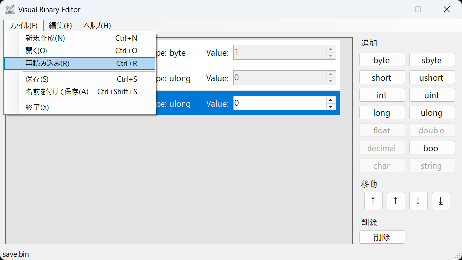
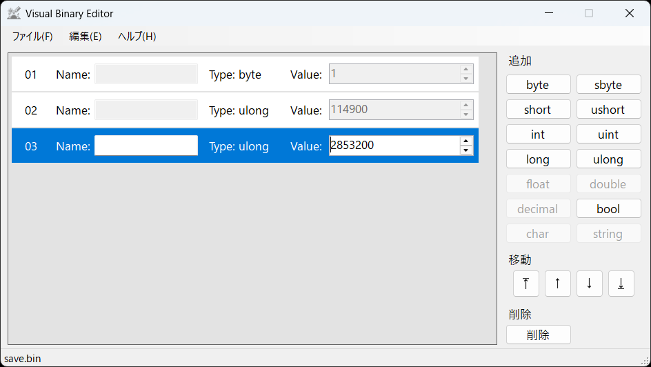
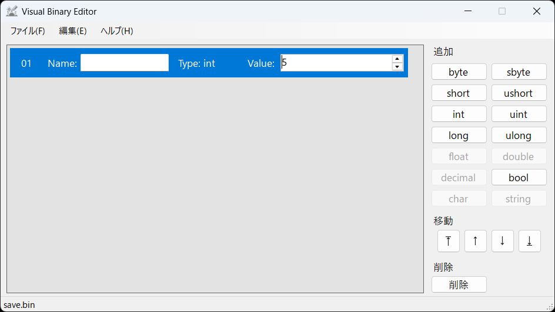
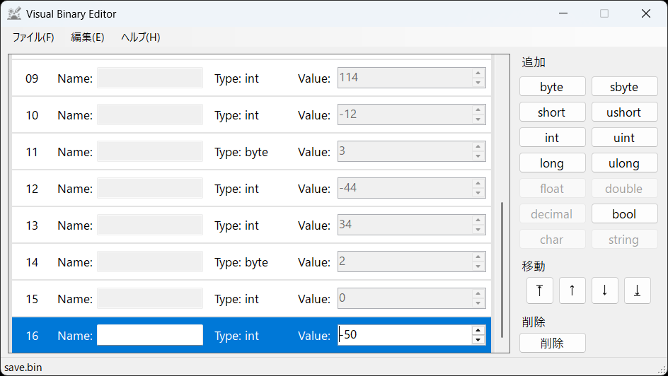
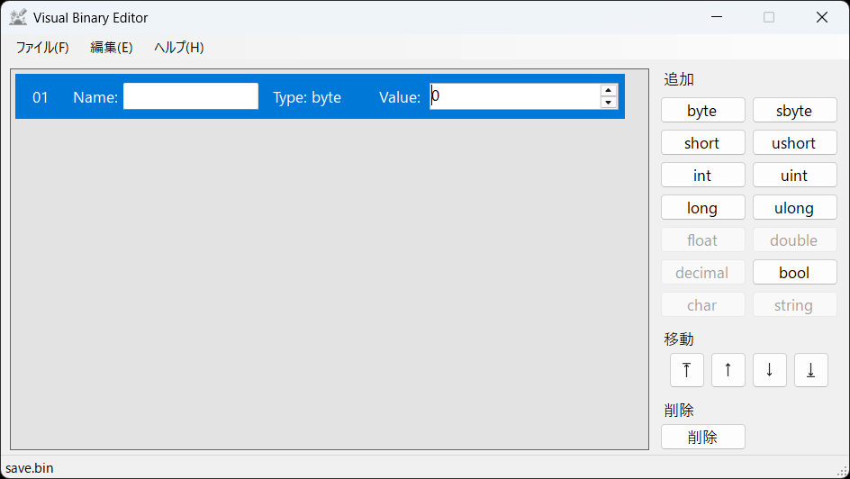
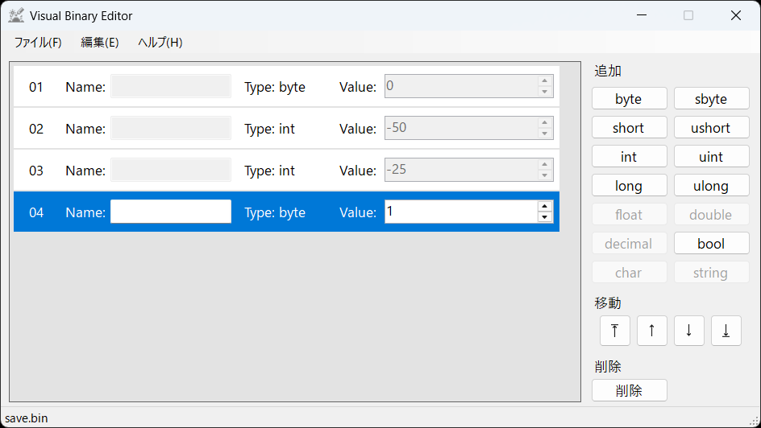
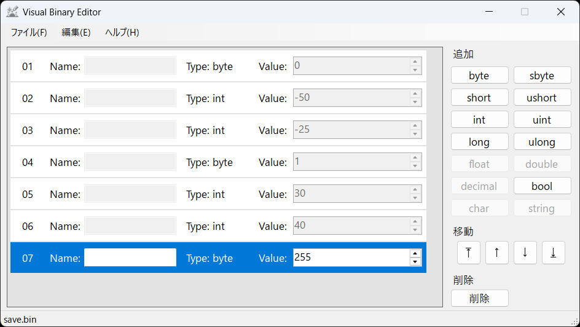

Visual Binary Editor
Visual Binary Editor
ヒント: 複雑なバイナリファイルを開く
全てのバイナリファイルが、一定の構成で保存されるとは限りません。
ソフトウェアが保存するバイナリファイルは、そのソフトがアップデートされた時に構成が変わる可能性があります。
条件分岐のあるバイナリファイル
例えば次のような読み込み方であるとします。
private ulong highScore;
private ulong totalScore;
// ...
private void ReadFromSaveFile(in string filePath)
{
// ...
using (BinaryReader reader = new BinaryReader(fileStream))
{
byte fileVersion = reader.ReadByte();
switch (fileVersion)
{
case 0:
LoadFileVersion0(reader);
break;
case 1:
LoadFileVersion1(reader);
break;
default:
throw new FileFormatException();
break;
}
}
}
private void LoadFileVersion0(in BinaryReader reader)
{
highScore = Math.Max(0, reader.ReadInt32());
totalScore = Math.Max(0, reader.ReadInt32());
}
private void LoadFileVersion1(in BinaryReader reader)
{
highScore = reader.ReadUInt64();
totalScore = reader.ReadUInt64();
}
このようにifやswitchなどによる条件分岐によって読み込み方が異なる場合は、まず条件分岐の直前まで読み込みます。
今回の例であれば、まずbyte型のバイナリエントリのみを追加してファイルを開きます。

開くと、以下のような注意のダイアログが表示されますが、問題ありません。

読み込んだ結果、fileVersionが1であると分かったので、ulongのバイナリエントリを2個追加して、再読み込みします。


可変長のバイナリファイル ①
上記の手法は、ifやswitch以外でも用いることができます。
次の例ではforの繰り返しで読み込んでいる場合です。
/*
internal class Box
{
internal byte Type { get; init; }
internal int X { get; init; }
internal int Y { get; init; }
internal Box(in byte type, in int x, in int y)
// ...
}
*/
private List<Box> ReadFromSaveFile(in string filePath)
{
List<Box> boxes = new List<Box>();
// ...
using (BinaryReader reader = new BinaryReader(fileStream))
{
int count = reader.ReadInt32();
for (var i = 0; i < count; i++)
{
byte type = reader.ReadByte();
int x = reader.ReadInt32();
int y = reader.ReadInt32();
Box box = new Box(type, x, y);
boxes.Add(box);
}
}
// ...
return boxes;
}
このように要素数が保存されている場合は、初めに要素数のみを読み込みます。
今回の例では、int型のバイナリエントリのみを追加してファイルを開きます。

countが5であることから、byte, int, intが5回繰り返されることが分かります。
byte, int, intの並びを5回追加して再読み込みします。

可変長のバイナリファイル ②
上記の手法は、繰り返される要素の数が保存されている場合にのみ用いることができます。
要素の数が保存されていなくとも、繰り返しの終わりを意味する数が保存されていれば読み込むことは可能です。
/*
internal enum ShapeType : byte
{
Circle,
Square,
Triangle,
EndLoad = 255
}
internal class Shape
{
internal ShapeType Type { get; init; }
internal int X { get; init; }
internal int Y { get; init; }
internal Shape(in ShapeType type, in int x, in int y)
// ...
}
*/
private List<Shape> ReadFromSaveFile(in string filePath)
{
List<Shape> shapes = new List<Shape>();
// ...
using (BinaryReader reader = new BinaryReader(fileStream))
{
while (true)
{
ShapeType type = (ShapeType)reader.ReadByte();
if (type == ShapeType.EndLoad)
{
break;
}
int x = reader.ReadInt32();
int y = reader.ReadInt32();
Shape shape = new Shape(type, x, y);
shapes.Add(shape);
}
}
// ...
return shapes;
}
この場合は、繰り返しの要素を順々に読み込んでいきます。
今回の例であれば、まずbyte型のバイナリエントリのみを追加してファイルを開きます。

読み込むと、0だったので、さらに読み込むことができます。
X, Y用のint型を2つ、さらに読み込めるか確認するためにbyte型を1つ追加して再読み込みます。

読み込むと、1だったので、さらに読み込むことができます。
これを終了を表す数値(今回の例では255)になるまで繰り返します。

このように条件分岐や繰り返しがある場合は、プログラムを辿るように読み込むことで正しくバイナリファイルを読み取ることができます。